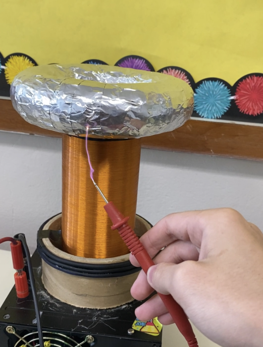
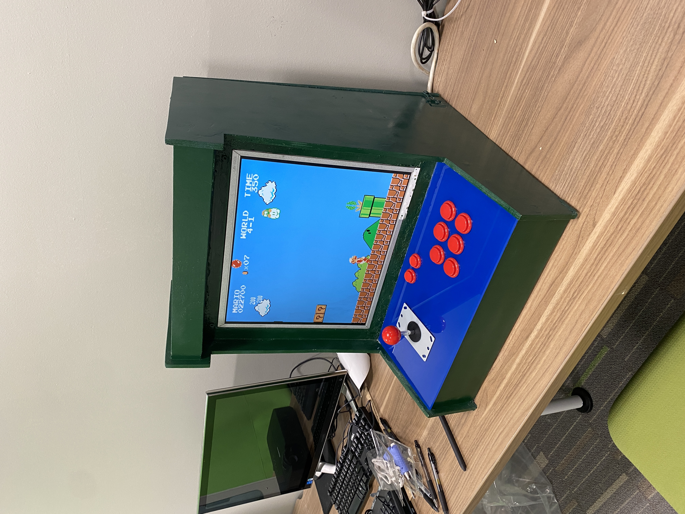
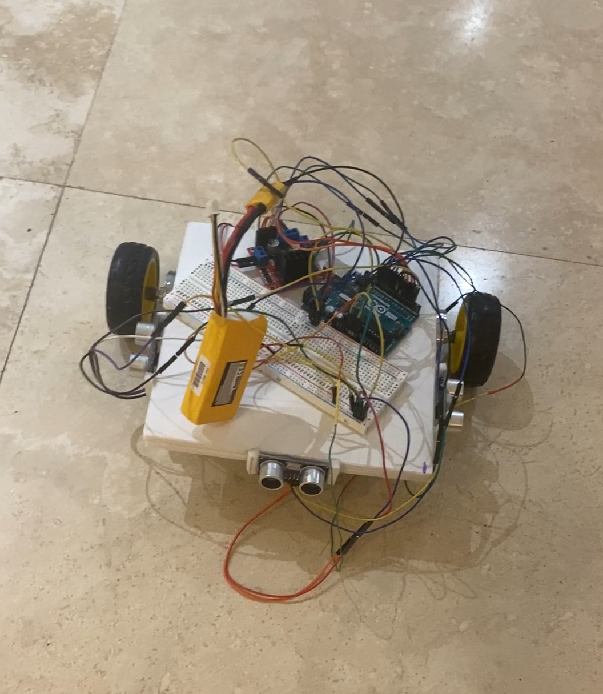
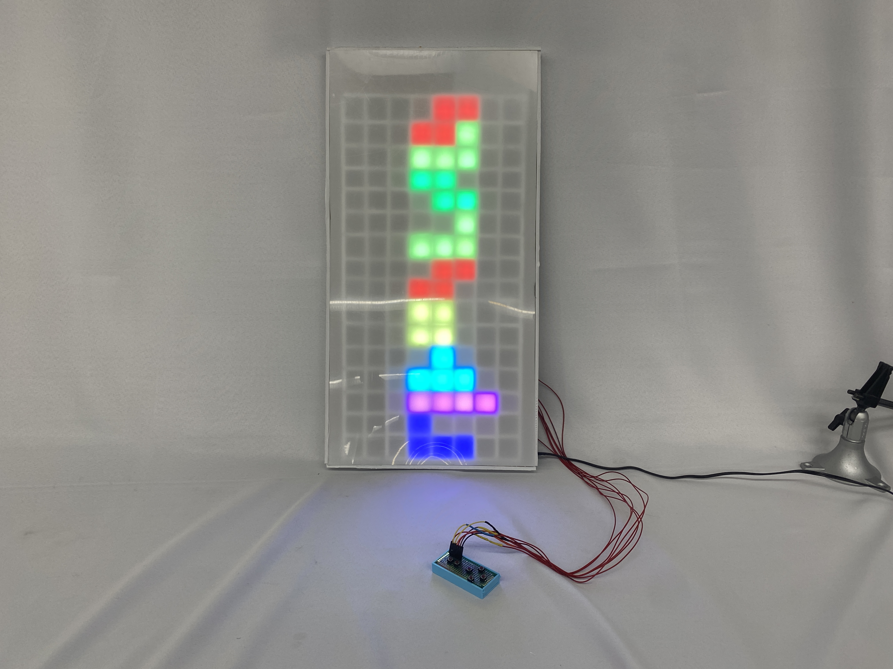
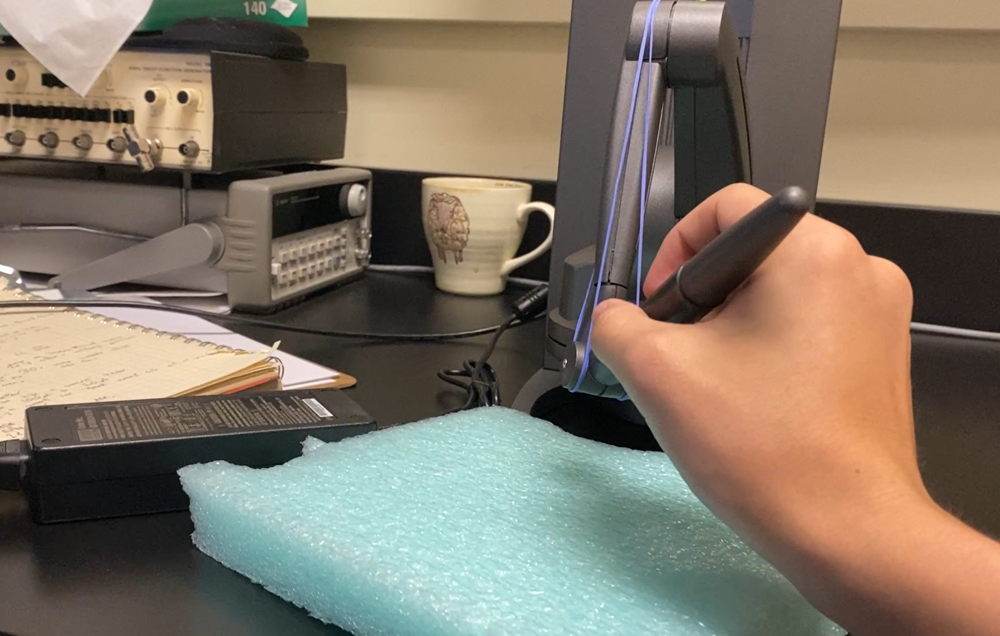
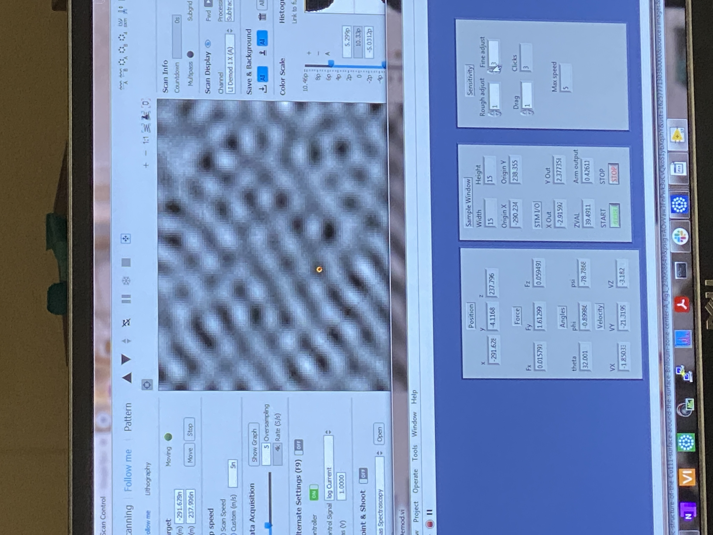

My SSTC with inspiration from the designs of Labcoatz. This was my first real high voltage project and it was a great introduction to that world.
I've always wanted an archade, so why not make one? Very fun project, learned about emulation and many pitfalls of fabrication.
To prep for working with Scanning Probe Microscopes I built a robot that goes against a wall and plots out the topology, roughly similar to how a SPM works.
My LED Tetris board was a fun project I did for a final at Harvard Summer School. The YouTube channel "ELECTRONOOBS" provided a great guide about doing something similar. Had many problems with controlling the LEDs, but nothing impossible.
 The haptic pen we were able to connect to the SPM, along with the surface topography (red dot signifies pen position). Undoubtedly the hardest project I've ever be part of.